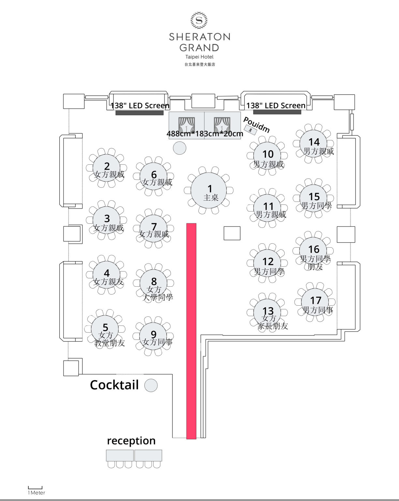

流程
10 月 24 日的行程。時間軸可以在這裡看，儀式和晚宴的完整內容也能自行開啟。
婚照
左右滑動，一張一張看。
座位
輸入自己的姓名、暱稱或稱呼，找出坐在哪一桌。桌圖會標出那一桌，並從入口指引過去。
這份座位表仍是範例。換成正式賓客後，請把 wedding-data.js 的 sampleSeating 改成 false。

10 月 24 日的行程。時間軸可以在這裡看，儀式和晚宴的完整內容也能自行開啟。
左右滑動，一張一張看。
輸入自己的姓名、暱稱或稱呼，找出坐在哪一桌。桌圖會標出那一桌，並從入口指引過去。
這份座位表仍是範例。換成正式賓客後，請把 wedding-data.js 的 sampleSeating 改成 false。
